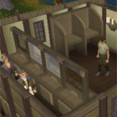

")
Fishing - Extra Features
The Fishing Guild | The Fishing Guild Bank | The Fishing Guild Shop | Fishing Gloves | The Fishing Trawler
Fish Flingers | Babrtail Harpoon | Tropical Wagtail Feathers | Locators | Summoning Familiars
Random Events | Agility Skill Bonuses | Training Hints and Tips | Dungeoneering | Quests Giving Fishing Experience
Fish Flingers | Babrtail Harpoon | Tropical Wagtail Feathers | Locators | Summoning Familiars
Random Events | Agility Skill Bonuses | Training Hints and Tips | Dungeoneering | Quests Giving Fishing Experience
Fishing Guild

From the entrance, you will see a very convenient range on the right-hand side and a respawn of a lobster pot, harpoon and a big net on the left-hand side.
Exiting to the north is a Fishing platform. Further north, east of the bank, is the second Fishing platform
The Fishing Guild Bank

A necklace of skills will teleport you directly to the guild.
The Fishing Guild Shop

This is also a useful place to stock up on feathers for the lazy fletcher!
Fishing Gloves
You need a Fishing level of 65 to wear swordfish gloves and 90 to wear shark gloves.
The Fishing Trawler
Murphy's boat (moored at Port Khazard) has a few holes in it, but he's not worried, he's an experienced sailor after all! Murphy says he doesn't need help, but if you're offering he could use the extra pair of hands. There is lots to do on board the boat, so it's a good idea to take on a few friends to help out while participating in the Fishing Trawler.
Fish Flingers
The Fishing Guild has discovered the perfect paradise for keen fishermen in the island of Isla Anglerine, to the north of the guild. They regularly hold what they're calling Fish Flingers competitions there. To take part, talk to one of the guild's fisherman representatives, either inside or outside of the guild, or on the beach at Catherby. Performing well in these competitions will afford you the opportunity to buy ever more useful tackle boxes in which to tidily store your fishing gear.
Barbtail Harpoon
Tropical Wagtail Feathers
Locators
 To get to your Fishing areas quicker, you might want to consider purchasing a locator. These can be bought using reward credits in Mobilising Armies. Each officer of the officer tower can offer you a different level of locator.
To get to your Fishing areas quicker, you might want to consider purchasing a locator. These can be bought using reward credits in Mobilising Armies. Each officer of the officer tower can offer you a different level of locator.
By using the locator, you can choose to be teleported to a Mining, Woodcutting, Fishing or Herblore secondary ingredient area. Once you have made your choice, the locator will make some mysterious calculations and then teleport you randomly to a suitable spot. Try not to be wasteful: the locators have a limited number of charges and can only be refreshed by buying another or playing a game of Mobilising Armies.
Summoning Familiars
Using the Summoning skill, you'll find that there are a few familiars that might be useful for training your Fishing. Of particular note is the granite crab, who grants you a boost to your Fishing level and gathers fish while you do.
Random Events
While Fishing in RuneScape you may notice the occasional event happening to you. They can occur at any time or any place, so if you are not paying attention, beware!
For more information on all Random Events please refer to our guide.
Agility Skill Bonuses
There is a chance of receiving bonus tuna, swordfish and shark when you have a high enough Agility and Fishing level. The chance of getting a bonus fish increases as your Agility increases, but there is an upper limit at which your chances will not increase (shown in the table below). You will not receive additional experience for gaining bonus fish.
The following levels are the exact levels required to receive multiple fish; unlike Runecrafting sloping, you do not gain a 'chance' of receiving a bonus fish if you are close to achieving the Agility or Fishing requirement. The following levels apply to both fishing and barbarian fishing.
|
Fish |
Fishing level |
Agility level |
Agility level (Upper limit) |
![[image]](../../img/main/kbase/items/food/fish/tuna1.gif) Tuna |
35 |
35 |
70 |
![[image]](../../img/main/kbase/items/food/fish/swordfish1.gif) Swordfish |
50 |
50 |
80 |
![[image]](../../img/main/kbase/items/food/fish/shark1.gif) Shark |
76 |
76 |
99 |
Training Hints and Tips
- Find a suitable Fishing spot next to a bank to save energy.
- If you can spare the inventory space, use a Fishing potion (Members Only); this temporarily boosts your level by 3.
Fishing Training in Dungeoneering
It is possible to train all of your skills while dungeoneering, and Fishing is no exception. In particular, there are shady pools about Daemonheim where you can catch crabs, eels and other strange fish from. You can also gain Fishing experience by completing fishing skill doors.
- To find out more about skill doors and the basics of dungeoneering, please click here
- To find out about fishing in Daemonheim, click here
- To find tables with Fishing requirements and XP levels, click here
Quests Giving Fishing Experience
For information on which quests reward you with Fishing experience see the Fishing Rewards page.
Click here to view the Fishing FAQs

More articles in
Fishing
|
|
|
Further Help
If this article does not help you, you may find the following sections of the RuneScape site helpful:
|
|